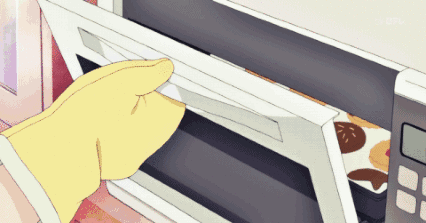

Baking needs an enclosed space for heating – typically in an oven. The fuel can be supplied by wood, coal, gas, or electricity. Adding and removing items from an oven may be done by hand with an oven mitt or by a peel, a long handled tool specifically used for that purpose.
Many commercial ovens are equipped with two heating elements: one for baking, using convection and thermal conduction to heat the food, and one for broiling or grilling, heating mainly by radiation. Another piece of equipment still used for baking is the Dutch oven. "Also called a bake kettle, bastable, bread oven, fire pan, bake oven kail pot, tin kitchen, roasting kitchen, doufeu (French: "gentle fire") or feu de compagne (French: "country oven") [it] originally replaced the cooking jack as the latest fireside cooking technology," combining "the convenience of pot-oven and hangover oven."
Asian cultures have adopted steam baskets to produce the effect of baking while reducing the amount of fat needed.